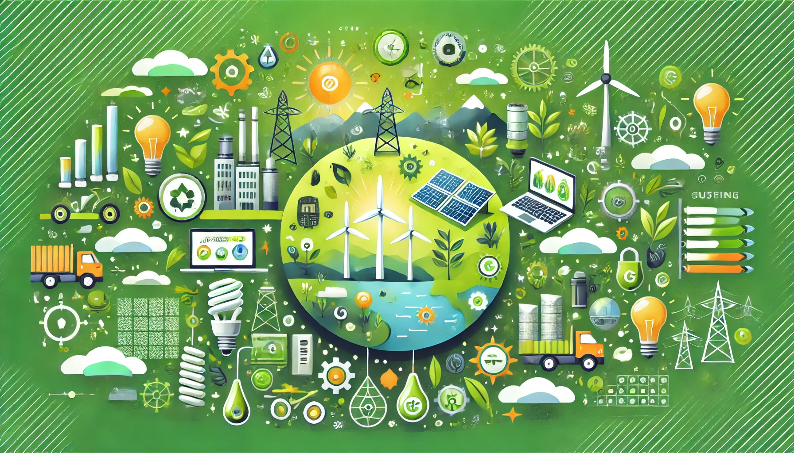
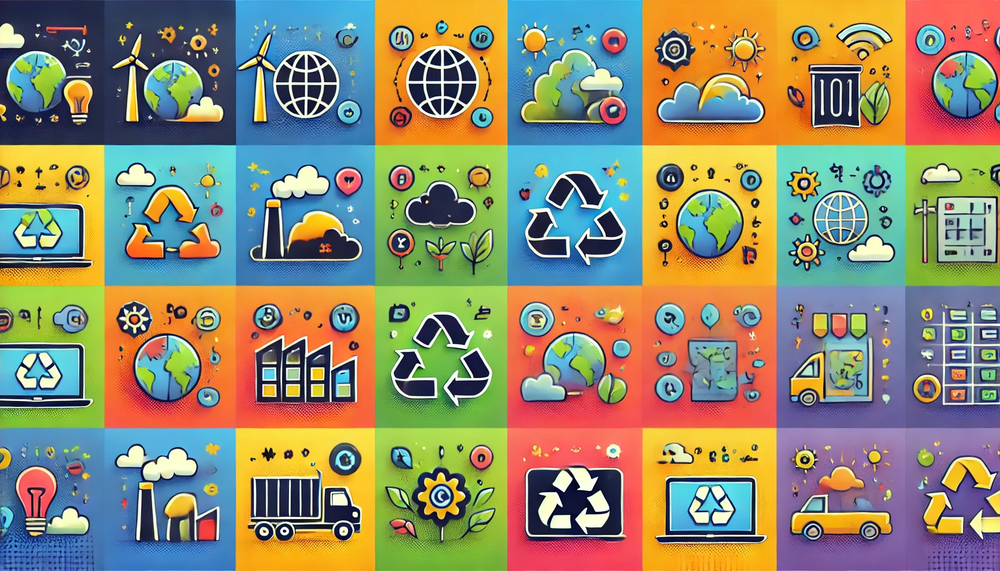
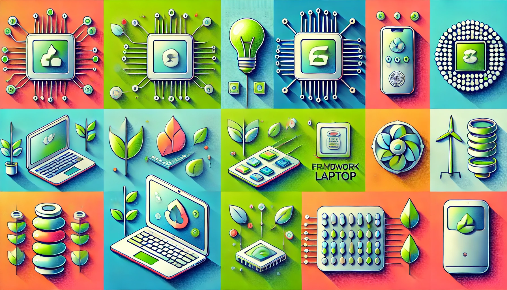
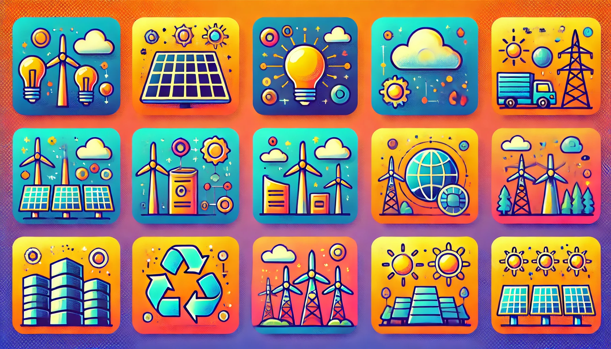
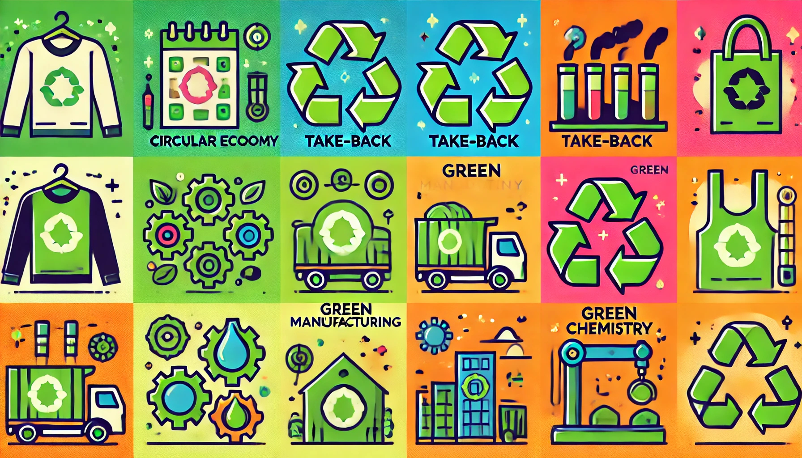
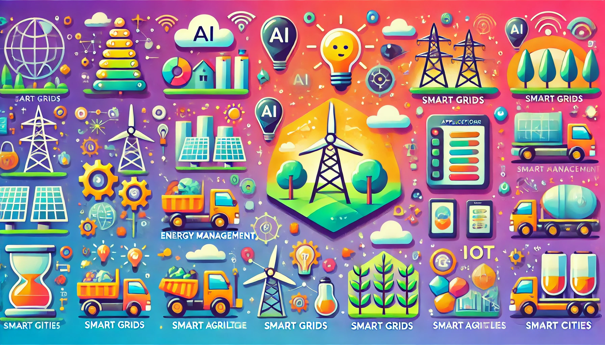
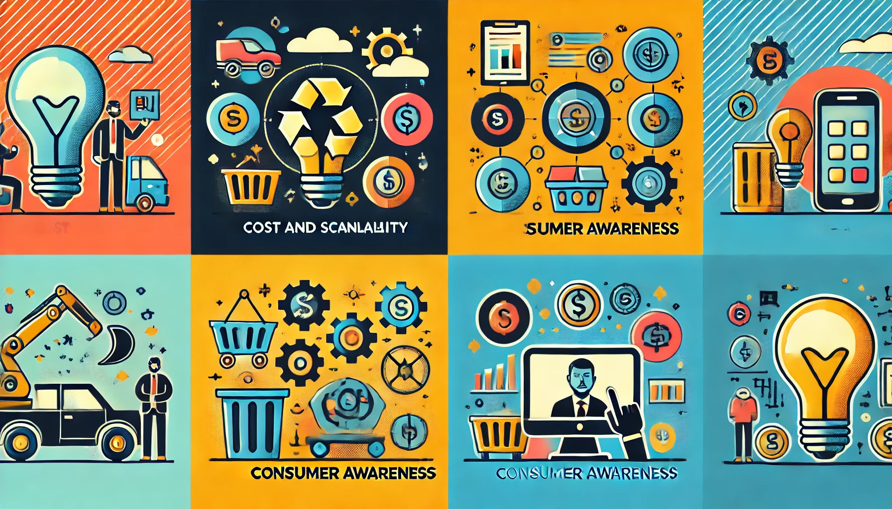
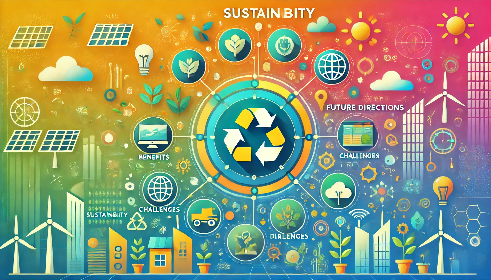

Sustainable Tech: Innovations in Green Hardware and Energy Efficiency
Overview
As technology becomes increasingly integrated into our daily lives, its environmental impact grows. The production, usage, and disposal of electronic devices contribute significantly to global carbon emissions and resource depletion. In response, the tech industry is developing sustainable technologies and practices to minimize environmental impact and promote a circular economy. This article reviews recent advancements in green hardware and energy efficiency, highlighting their potential to reduce carbon footprints and promote sustainability.

The Need for Sustainable Technology
The technology sector has a considerable environmental footprint. Manufacturing processes for electronic devices are resource-intensive, and energy consumption from data centers, servers, and consumer electronics contributes to greenhouse gas emissions. Additionally, electronic waste (e-waste) is a growing concern, with millions of tons of discarded devices polluting the environment each year.
Key Concerns:
• Carbon Emissions: The tech industry is responsible for approximately 3-4% of global carbon emissions, comparable to the aviation industry.
• Resource Depletion: The extraction of rare earth metals and other raw materials used in electronics has significant environmental and social impacts.
• E-Waste: Around 50 million tons of e-waste are generated annually, much of which ends up in landfills, releasing harmful chemicals into the environment.
Sustainable technology aims to address these issues by creating devices and systems that are more energy-efficient, durable, and easier to recycle.

Innovations in Green Hardware
Green hardware refers to electronic devices designed with sustainability in mind, incorporating energy efficiency, recyclability, and eco-friendly materials.
Energy-Efficient Processors:
• Apple’s M1 Chip: Apple’s M1 chip, used in its latest MacBooks and iPads, is designed to be highly energy-efficient, reducing power consumption without sacrificing performance. It integrates multiple components into a single chip, minimizing energy loss and heat generation.
• ARM-based Processors: ARM processors, widely used in mobile devices, are known for their energy efficiency. As more laptops and desktops adopt ARM architecture, energy consumption could be significantly reduced.
Eco-Friendly Materials:
• Biodegradable Components: Companies are developing electronic components made from biodegradable materials, such as organic polymers and cellulose, to reduce e-waste.
• Recycled and Sustainable Materials: Tech companies like Dell and HP are using recycled plastics and metals in their products. Google’s Nest line of products now incorporates post-consumer recycled plastic, and Apple has committed to using 100% recycled aluminum in its devices.
Modular and Repairable Devices:
• Fairphone: Fairphone designs modular smartphones that prioritize repairability and longevity, allowing users to easily replace components like batteries and screens.
• Framework Laptop: The Framework Laptop is a modular notebook designed for easy upgrades and repairs, reducing the need for complete device replacements and lowering e-waste.
Advancements in Energy Efficiency
Reducing energy consumption is a key aspect of sustainable technology, and recent advancements are making electronic devices and data centers more energy-efficient.
Energy-Efficient Data Centers:
• Google and Microsoft: Both companies have invested in energy-efficient data centers that use advanced cooling technologies and renewable energy sources. Google’s data centers use AI to optimize energy usage, reducing cooling energy by 30%.
• Liquid Cooling: Data centers are adopting liquid cooling systems, which are more efficient than traditional air cooling, helping to lower energy consumption and operational costs.
Smart Home Technology:
• Energy-Efficient Appliances: Smart home devices like thermostats, lights, and appliances can be programmed to optimize energy usage based on user behavior and environmental conditions.
• Smart Thermostats: Devices like the Nest Learning Thermostat adjust heating and cooling settings based on occupancy and weather forecasts, reducing energy consumption by up to 15%.
Low-Power Consumption Displays:
• OLED and E-Ink Displays: OLED and e-ink displays consume less power than traditional LCDs, making them ideal for energy-efficient devices. E-ink displays, used in e-readers like the Kindle, require no power to maintain an image, significantly extending battery life.

Renewable Energy Solutions in Tech
The integration of renewable energy into the tech sector is crucial for reducing reliance on fossil fuels and lowering carbon emissions.
Solar-Powered Devices:
• Solar-Powered Gadgets: Devices like solar-powered chargers, keyboards, and lights reduce the need for disposable batteries and grid electricity, promoting energy independence and sustainability.
• Solar-Powered Data Centers: Tech giants like Amazon and Facebook are investing in solar farms to power their data centers, reducing their carbon footprint.
Renewable-Powered Manufacturing:
• Tesla’s Gigafactories: Tesla’s Gigafactories use solar energy and other renewable sources to manufacture electric vehicles and batteries, minimizing the environmental impact of production.

Sustainable Manufacturing Practices
Eco-friendly manufacturing processes are essential for reducing the environmental impact of tech production.
Circular Economy Models:
• Closed-Loop Manufacturing: Companies are adopting closed-loop manufacturing processes, where products are designed to be easily disassembled and recycled at the end of their life cycle.
• Take-Back Programs: Brands like Apple and Dell offer take-back programs for old devices, ensuring they are responsibly recycled or refurbished.
Reducing Water and Chemical Use:
• Waterless Dyeing: Innovations in textile technology are reducing water and chemical usage in the production of wearable tech and accessories.
• Green Chemistry: Using less toxic chemicals in manufacturing processes helps reduce environmental contamination and improves worker safety.

The Role of AI and IoT in Sustainability
Artificial intelligence (AI) and the Internet of Things (IoT) are playing a significant role in promoting sustainability by optimizing energy usage and resource management.
AI for Energy Management:
• Predictive Analytics: AI can predict energy usage patterns and optimize systems for better efficiency, reducing waste and lowering costs.
• Smart Grids: AI helps manage smart grids by balancing energy supply and demand, integrating renewable energy sources more effectively.
IoT for Resource Management:
• Smart Agriculture: IoT devices monitor soil conditions, water usage, and crop health, enabling precision agriculture that reduces resource consumption and minimizes environmental impact.
• Smart Cities: IoT-enabled smart city initiatives optimize energy use in lighting, transportation, and waste management, contributing to lower carbon emissions and improved urban living conditions.

Challenges and Future Directions
Despite significant progress, there are still challenges to widespread adoption of sustainable technology.
Cost and Accessibility:
• Higher Initial Costs: Eco-friendly materials and energy-efficient technologies can be more expensive to develop and implement, limiting their accessibility to smaller companies and consumers.
• Scalability: Scaling sustainable practices to meet global demand while maintaining affordability and performance is a major challenge.
Consumer Awareness and Adoption:
• Education and Awareness: Increasing consumer awareness about the benefits of sustainable tech is crucial for driving adoption and encouraging responsible consumption.
E-Waste Management:
• Recycling Infrastructure: Effective e-waste recycling requires robust infrastructure and policies to ensure that valuable materials are recovered and hazardous components are safely disposed of.

Conclusion
Sustainable technology is not just a trend but a necessity for the future of our planet. Innovations in green hardware, energy efficiency, and renewable energy are helping to reduce the tech industry’s environmental impact and pave the way for a more sustainable future. While challenges remain, continued advancements in sustainable tech and a growing commitment from consumers and companies alike are promising signs that the technology sector can be a leader in the global effort to combat climate change and promote environmental stewardship.